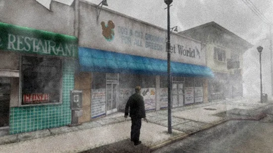

کابوس ناتمام تحلیل بازی سایلنت هیل 2

نویسنده : کسری کاظمی
1401/9/14
قبل از هر چیزی از شما یک درخواست دارم؛ می خواهم که کمی فکر کرده و به این سوال ساده جواب دهید: ترس به چه معناست؟ چه چیزی شما را می ترساند؟ پیش از پاسخ گویی، می توانم حدس بزنم که گزینه های متعددی را در ذهنتان مرور کردید؛ ترس از ارواح، ترس از تاریکی، ترس از ارواحی که ممکن است در زمان تاریکی به سراغتان بیایند، یا اگر بخواهیم با دیدی واقع گرایانه به موضوع نگاه کنیم، ترس از توبیخ شدن توسط والدین یا معلمان به دلیل درس نخواندن هم می تواند در طرف دیگر ترازو قرار بگیرد، مگرنه؟ در کنار ترس های روزمره ای که با آن ها سر و کار داریم، هر کدام از ما قطعاً از چیزی وحشت داریم که از دید سایر مردم (حداقل همه آن ها) آن چنان هم وهم آور نیست و اینجاست که باید کمی وارد علم روانشناسی شویم. فوبیا (Phobia) گونه ای اختلالات روانی هستند که در زندگی اکثر مردم جهان تاثیر گذاشته اند. ترس از خون (Haemophobia)، ترس از مرده ها و مرگ (Necrophobia) در طرفی از این دایره قرار دارند و در کنار این ها موارد عجیب و غریب تری مانند ترس از ازدواج (Gamophobia) و ترس از ترس (Phobophobia) نیز وجود دارند! فعلاً از بحث روانشناسی خارج می شویم و دست از سر ترس و لرز های بشر بر می داریم، هر چند مشخص است که شما همین حالا در حال مرور فهرست حشرات و هیولا هایی هستید که از آن ها وحشت دارید! شاید بهتر باشد برای رسا تر کردن مفهوم ترس سری به دنیای سینما بزنیم؛ از شاهکار های کلاسیکی چون درخشش (The Shining) اثر استنلی کوبریک (Stanley Kubrick) و پرندگان (The Birds) اثر آلفرد هیچکاک (Alfred Hitchcock) گرفته تا حتی آثار ترسناکی که هر روز در حال انتشارند و هر کدام به نوعی دست روی ضمیر ناخود آگاه ترس هایمان می گذارند. در دنیای بازی های رایانه اما اوضاع کمی متفاوت تر است. در این صنعت عناوینی وجود دارند که به منظور خلق رعب و وحشت ساخته شده اند و قرار هم هست که وظیفه خود را به خوبی انجام دهند. چه ترسی بنا بر قرار دادن شما در یک تیمارستان روانی در کنار صد ها بیمار خطرناک باشد (Outlast) و چه پارانوید کردنتان توسط ایجاد نظریه تنها نبودن در جنگل و تعقیب شدنتان توسط مردی بلند قامت (Slender: The Eight Pages). در سبک بازی سازی مشرق زمین البته اوضاع کمی با غرب متفاوت است. در کشور ژاپن که یکی از بزرگ ترین مهد های پیدایش پدیده ساخت بازی های رایانه ای و همینطور سمبول پردازی و به اجرا در آوردن ایده های دیوانه وار است، شاهد ظهور سبکی متفاوت نسبت به بازی هایی هستیم که امروزه در حال گسترش در صنعت هستند. سبک ترس و بقا (Survival horror) از این دسته بازی هاست که برای اولین بار توسط عنوان افسانه ای شرکت کپکام (Capcom) یعنی Resident Evil محصول ۱۹۹۶ به جهان معرفی شد و چنان در سراسر دنیا به محبوبیت رسید که امروزه شاهد پدید آمدن سبک هایی مختلف بر اساس همین فرمول هستیم. این مجموعه بازی بدون هیچ شکی تا سالیان سال حاکم مطلق سبک وحشت در بازی های رایانه ای بودند، تا اینکه کپکام برای تقویت جایگاه خود در صنعت، تصمیم به خلق یک مجموعه دیگر با همین حال و هوا ولی به شیوه ای متفاوت گرفت. Dino Crisis دقیقاً با پیرویی از پدر خود یعنی Resident Evil به ادامه مسیر موفقیت های کپکام ادامه داد تا اینکه شرکت کونامی (Konami) با ورود به گود بازی های ترسناک و در طی یک حرکت اساسی تصمیم گرفت که خود نیز دستی در این فرمول ویژه ببرد و چاشنی های مخصوص خود را به آن اضافه کند. اولین نسخه از سری بازی های Silent Hill در سال ۱۹۹۹ برای کنسول PlayStation منتشر شد و با به وجود آوردن دیدی نوین به پدیده وحشت، نظر ما را باری دیگر نسبت به آن توسط یک بازی رایانه ای عوض کرد. زمانی که Resident Evil ها با به کار گیری نکرو فوبیا (همان ترس از مرده ها) و ترس از فضای بسته (Claustrophobia) سعی داشتند تا مخاطبان را به نهایت اوج وحشت برسانند (که البته بسیار هم موفق بودند)، Silent Hill این موضوع را به گونه ای دیگر تعریف کرد. بازی مذکور با به کار گیری جزئیات کوچک در اتمسفر بازی و به کار گیری تک تک وقایعی که می تواند روی هر فردی با فوبیای مختلف تاثیر بگذارد، دست به ساخت عنوانی زدند که به تنهایی می تواند از پس ترساندن افراد زیادی در هر رده سنی و هر ذهنیتی بر بیاید؛ تازه این همه ماجرا نبود بلکه در ساخت بازی موسیقی های استرس زا و داستانی دلگیر در عین حال پیچیده به سبک فیلم سازان سبک روانشناختی، نیز بسیار موثر بودند. نسخه اول بازی Silent Hill بازخوردی بسیار عالی چه از طرف طرفداران و چه منتقدان دریافت کرد و با کسب میانگین نمرات ۸۶ و فروشی چشمگیر (بیش از ۲ میلیون و پانصد هزار نسخه) به کار خود پایان داد. حال پس از گذشت ۲ سال از نسخه اول، با کلی تغییرات و دستکاری های فراوان (مانند تغییر کارگردان بازی از آقای Keiichiro Toyama به آقای Masashi Tsuboyama) دومین نسخه رسمی از سری Silent Hill در سال ۲۰۰۱ منتشر شد. عنوانی که تا به امروز شایسته ترین و تحسین شده ترین نسخه در سری می باشد. حال که همه چیز را درباره ترس و شیوه برخورد با آن می دانید، فکر کنیم که آماده اید تا پا به درون جهان پیچیده و تاریک Silent Hill وارد شوید؛ ولی قبل از هر چیزی از شما یک درخواست دارم؛ می خواهم که کمی فکر کرده و به این سوال ساده جواب دهید: دقیقاً از چه چیزی می ترسید؟
تولید Silent Hill 2 در ماه ژوئن سال ۱۹۹۹ میلادی شروع شد؛ یعنی درست پس از اتمام نسخه اول بازی. بازی توسط Team Silent ساخته شد؛ گروهی که تحت زیر مجموعه ای از شرکت اصلی توسعه گر کونامی فعالیت می کردند. داستان بازی توسط کارگردان هنری آن یعنی آقای Takayoshi Sato نوشته شد که الهام گرفته شده از رمان نویسنده مشهور روسی Fyodor Dostoyevsky به نام جنایات و مکافات (Crime and Punishment) بود. در کل ۵۰ نفر با کمتر از ۷ میلیون دلار بودجه ساخت بازی را در یک دفتر کوچک شروع کرده و آن را در عرض یک سال به پایان رساندند. داستان Silent Hill 2 به مانند نسخه اول در یک فضای روانشناختی سنگین روایت می شود و سازندگان نیز به خوبی از این موضوع آگاه بودند زیرا تمرکز اصلی خود را در ابتدا بر روی سناریوی بازی گذاشتند. سخت افزار قدرتمند کنسول پلی استیشن ۲ به توسعه دهندگان این اجازه را می داد تا به صورت حرفه ای تری بر روی مه و سایه ها کار کنند. علائم روانشناختی مانند ناپدید شدن وسایل و سمبل گرایی در بازی از چیز هاییست که سازندگان می خواستند درون بازی جای دهند و به خواسته خود نیز رسیده اند. برای بخش هنری بازی، سازندگان نگاه ویژه ای به آثار کارگردانانی چون دیوید کروننبرگ (David Cronenberg)، دیوید لینچ (David Lynch)، دیوید فینچر (David Fincher) و آلفرد هیچکاک (Alfred Hitchcock) داشته و در کنار این ها می شود نشانه ها و شباهت های بسیاری میان بازی و فیلم نردبان جیکوب (Jacob’s Ladder) پیدا کرد. آثار نقاشانی مانند Francis Bacon، Rembrandt و Andrew Wyeth نیز دست خوش الگو برداری هایی در بازی شده است. سکوت علامت رضاست معمولاً دلیل ساده ای دارد که از تجربه یک بازی رایانه ای ناراحت یا عصبی شوید؛ مشکلات فنی درون بازی و کار نکردن بخش های مختلف آن که این حس را به شما می دهد که پولتان را دور ریختید. عنوان Silent Hill 2 قطعاً شما را ناراحت و عصبی می کند، با این تفاوت که اینبار قرار است به دلیل طراحی های بی نظیر در عین حال منزجر کننده و دلهره آور بازی و کار کردن تمامی بخش های آن به خوبی، این حس به شما دست بدهد. اما مهم تر از همه فرمول ها که قرار است حسابی حال بازیکنان را جا بیاورد، داستان سورئال، تراژیک و پیچیده بازی است که در کنار روایت زیبا و بی نظیرش، حس بسیار بدی را درون بازیکن به وجود می آورد. پیش از هر چیزی باید بدانید که در Silent Hill 2 شما با یک بازی کاملاً تازه و اورجینال طرف هستید و قرار نیست که هیچ اشاره ای به شخصیت ها، داستان و وقایع نسخه اول شود (البته جدا از شهر تپه خاموش که یک ناحیه مه گرفته و مخوف است). جیمز ساندرلند (James Sunderland) شخصیت اصلی بازی است که یک نامه از طرف همسرش “مری” دریافت می کند، مبنی بر اینکه او را در محل خاصی در محله “تپه خاموش” ملاقات کند. شاید این موضوع از دید شما زیاد عجیب و غریب به نظر نرسد، ولی وقتی بفهمید که مری ۳ سال قبل در اثر یک بیماری مرده است، آن وقت است که اوضاع کمی پیچیده می شود. جیمزِ قصه ما هم که پس از مرگ مری نتوانسته آنطور که باید و شاید با اوضاع زندگی خود کنار بیاید، تصمیم می گیرد که دست به این ریسک زده و به سمت شهر ترسناک و ارواح خیز تپه خاموش حرکت کند. از آنجایی که افراد مرده نمی توانند نامه بنویسند، پس این نامه تنها یک معنی می تواند بدهد: دردسر؛ و جیمز نیز به سرعت در حال حرکت به سوی این دردسر است. پس از ورود به شهر، جیمز با موارد عجیب و غیر معمولی روبرو می شود که او را بیش تر از نامه همسر مرحومش نگران می کنند. سفری که جیمز در پیش گرفته پر است از راست و دروغ، فتنه و فریب، معما و راز هایی که با پیش روی در داستان بازی باید از آن ها پرده بگشایید. اکثر مردمی که در طول بازی با آن ها روبرو می شوید، از سلامت روانی متعادلی برخوردار نبوده و در کنار آن ها هم هیولا ها مورد بعدی هستند که قرار است باهاشان سر و کله بزنید. هنگامی که بازی پیش می رود، شما با تعدادی میان پرده سینمایی روبرو می شوید که در عین روایت جالب، نمایانگر قدرت نهفته و بی همتای کنسول پلی استیشن ۲ هستند. در کنار میان پرده های سینمایی، ویدیو های درون بازی هم وجود دارد تا بتوانید دقیق تر با شخصیت های فرعی و نحوه برخورد با محیط بازی، کنار بیایید. به نظر نمی رسد که جیمز بتواند در میان این همه آدم دیوانه و هیولا، درون شهر برای خود دوستی پیدا کند، با این حال چند شخصیت درون بازی وجود دارند که نگذارند در این مسیر دیوانه وار تنها باشید؛ مانند آنجلا که زنیست در جستوی مادرش است و لارا، دختری که گویا از خود شما بیش تر درباره گذشته و آیندتان خبر دارد. در کل داستان بازی چیزیست که تنها برای افرادی نوشته شده که بتوانند کشش تمامی این بار های روانی سنگین را داشته باشند و در زیر فشار عصبی خرد نشوند. نماد گرایی و سمبل های فراوانی نیز در سراسر بازی وجود دارند که با دقت در آن ها می توانند سر از مفهوم پنهانشان در بیاورید. داستان بازی Silent Hill 2 تا به امروز یکی از زیبا ترین داستان های روانشناختی در تاریخ بازی های رایانه ای به حساب می آید.
داستان بازی پس از به اتمام رسیدن، بیشتر با عقل و منطق سلیم انسان جور در می آید تا نسخه اول بازی Silent Hill؛ ولی بر خلاف نسخه اورجینال، هیچ گاه نیاز مبرم به دانستن در همان نقطه شروع را در در بازیکن بر نمی انگیزد که کمی تو ذوق طرفردار درجه یک نسخه اول خواهد زد. در نسخه اول، بازی دارای چندین پایان مختلف می باشد و صد البته خیلی راحت می شود پایان درست را انتخاب کرد؛ ولی در بازی دوم، اگر همچین سیستمی حاکم بود مطمئناً صدای خیلی ها را در می آورد (به دلیل قابل درک بودن بیشتر بازی). در کل شیوه، روایط و پختگی بخش داستان سرایی برای اینگونه بازی ها دارای اهمیت فراوانی است. از آنجایی که بسیاری از بازیکنان برای تجربه اِلِمان های مختلف سبک وحشت یا تجربه و پرده برداری از صحنه های منزجر کننده و خشن پا به این بازی های می گذارند، یک داستان سرایی قوی می تواند تجربه ای برابر با تماشای یک فیلم جنایی و ترسناک کامل را برای آن ها رقم بزند. این نکته را درباره داستان بازی باید در نظر بگیرید که اگر به دنبال همچین تجربه کاملی هستید، Silent Hill 2 می تواند به کمکتان بشتابد، ولی بدانید که داستان این بازی نسبت به نسخه اول کم تر ترسناک (و بیشتر عجیب و غریب) است. برای مثال، یکی از هیولا های نسخه اول، یک موجود نیمی انسان، نیمی سگ بود که شما را در میان گرد و غبار دنبال می کرد و زوزه خشن و دلهره آورش همراه با پوست منزجر کننده اش، این قابلیت را داشت تا موهای تنتان را تا چند لحظه سیخ کند! موجودات Silent Hill 2 شاید به ظاهر نگران کننده و کمی غیر طبیعی به نظر برسند، ولی شما به راحتی می توانید نابودشان کنید آن هم به این خاطر که سد راه شما شده اند و همینطور هم شما کلی مهمات همراه خود دارید که کار را آسان و از بار وحشتناکی آنان می کاهد. مانند بسیاری از فیلم های ترسناک، Silent Hill 2 نیز درجه ای به نام آرامش قبل از طوفان دارد و در ابتدا همه چیز را آرام شروع کرده و از صبوری شما سوء استفاده کرده، در نهایت ناگهان مشکلات متعددی را بر سرتان فرود می آورد. زمانی هم که جو بالا می گیرید، بازی سعی می کند تا با دخیل کردن معما ها و پازل ها، به جای نگه داشتن ضربان قلبتان در بالا ترین حالت تپش خود، فضا را دوباره خاموش کند. پازل های بازی بسیار عالی و بی نقص هستند، فقط اینکه این قطع و وصلی کمی می تواند با اعصاب بازیکن ها بازی کند.

زبان سرخ، سرِ سبز می دهد بر باد درست است که نام ژانر بازی “ترس و بقا” می باشد ولی در حقیقت شما قرار است تا بیشتر به حل معما ها و جمع آوری اشیای مختلف بپردازید تا تلاش برای بقا در طبیعت وحشی. سیستم حل معما ها و پازل ها (که به مانند نسخه اول از اصلی ترین عوامل گیم پلی محسوب می شود) این بار در این نسخه به شکل پیشرفته تر و دشوار تری پا به میدان گذاشته اند. برخی از پازل ها نیازمند جمع آوری قطعات مختلف و ترکیب آن ها با یکدیگر به منظور ساختن یک کلید هستند. باقی معما ها شما را ترقیب می کنند تا با یافتن نامه ها و اطلاعات متنی، سپس در کنار هم قرار دادن آن ها، به کد یا رمز حل یک پازل دست یابید و مخلوطی از معما های دیگر که در طول گیم پلی بازی به آن ها برخورد می کنید. در کل پازل ها و معما های Silent Hill 2 به خوبی طراحی شده اند و به اندازه کافی سخت هستند تا شما را مقداری به فکر وا دارند تا بتوانید در نهایت از پسشان بر بیایید؛ اما نه در آن حد سخت که مجبور به ترک بازی یا استفاده از تقلب باشید. تنها در یک صورت امکان دارد که در یک نقطه از بازی گیر بی افتید و آن هم این است که یک معما و پازل را فراموش کرده باشید و از دست داده باشید که این مشکل با زیر و رو کردن چند باره یک اتاق بر طرف می شود. سیستم نقشه برداری بازی بسیار عالی و مفید بوده و به راحتی همین مشکل را نیز به صفر می رساند؛ زیرا دقیقاً به شما نشان می دهد که از چه اتاقی بازدید کرده اید، در کدام اتاق ها قفل بوده و پازل هایی که حل کرده اید کجا قرار دارند، یعنی پس از حل آن ها، علامت حل شده بر رویشان برچسب می خورد. از دیگر ویژگی های خوب بازی می توان به این موضوع اشاره کرد که زمانی که در حال عبور از راهرو و یا خیابانی هستید، سر شخصیتتان به سمت نقاطی که اشیاء در آنجا قرار دارد، می چرخد که با کمک این قابلیت، می توانید مقدار زیادی از زمان خود را ذخیره کنید تا اینکه هر منطقه را برای یافتن وسایل زیر و رو کنید.
درست است که به شما آدرس یک بازی ترسناک را داده اند و درون این بازی نیز هیولا های کلیشه ای این سبک وجود دارند، ولی زیاد نگران این موضوع نباشید، زیرا هیولا ها آنچنان خطری برایتان محسوب نمی شوند. درون بازی مقدار زیادی مهمات و جعبه های کمک های اولیه وجود دارد و دشمنان نیز همیشه آنقدر از شما دور هستند که می تونید با حفظ کامل خونسردی خود، پیش از نزدیک شدنشان اقدام به حمله کنید. زمانی که درون خانه هستید، برای عبور کردن و پیش روی در بازی، باید آن ها را نابود کنید، ولی در محیط باز آن ها آنقدر کند و بی حال هستند که می توانید حتی به راحتی از دستشان فرار کنید. در کل در رابطه با سیستم مبارزات در بازی می توان گفت که به هیچ وجه چالش بر انگیز نبوده و حتی با گذر زمان تکراری و خسته کننده می شوند. حتی باس های بازی نیز برای کسانی که پیش از این به تجربه Resident Evil پرداخته اند، مانند کشتن چند زامبی معمولی در بازی است. کنترل پیش فرض بازی Silent Hill 2 بسیار شبیه به عنوان کپکام یعنی Resident Evil بوده که در آن باید ابتدا صورت شخصیت را به سمت مسیری که می خواستید بروید، می بردید و سپس به آن سمت حرکت می کردید. منتقدان این ویژگی را در Resident Evil تخریب کرده اند ولی در این جا زیاد نمی شود به چشم یک ایراد به آن نگاه کرد زیرا این تغییر جهت بسیار سریع و نرم صورت می گیرد. افرادی هم که به این سیستم عادت نداشته و مخالف آن هستند، می توانند با تغییر دادن آن به صورت عادی حرکت کنند؛ ولی بدانید که یکی از دلایل به یادماندنی شدن این بازی و در کل سری Silent Hill و نسخه های کلاسیک Resident Evil و از فرمول های ایجاد ترس، همین سیستم کنترل شخصیت بازی می باشد. علاوه بر باز بودن دست بازیکن در انتخاب سیستم کنترل شخصیت اصلی، بازی همچنین دست شما را برای انتخاب سیستم دشواری حل پازل ها و حتی برخورد با هیولا های بازی نیز باز گذاشته است. کافیست سطح دشواری بازی را بر روی حالت مبتدی قرار داده، سپس می توانید در بازی شروع به قدم زنی کنید، آن هم در حالی که چندین هیولا در تعقیبتان هستند و حتی برای خستگی در کردن مدتی بایستید! خلاف این قضیه نیز جریان دارد که کاملاً برای طرفداران پر و پا قرص بازی های ترس و بقا ساخته شده و قرار نیست هر کسی را راضی و خشنود کند.
در بازی خبری از نقشه کوچک (Mini-Map) یا هیچ گونه HUD دیگری نیست (به مانند نسخه اول) و چیزی مثل سیستم کوله پشتی در Resident Evil بر بازی حاکم است و بازیکن باید اطلاعات خود را از طریق رفتن به منوی مخصوص دریافت کند. بهتر است اشاره ای هم به بخش اسلحه ها در بازی بکنیم. بازیکن برای بقا مجبور به استفاده از اسلحه ها می شود و جیمز نیز در طول بازی به ابزار زیادی بر می خورد که هر کدام با قابلیت خود می توانند به عنوان اسلحه استفاده شوند. تخته میخ دار اولین سلاحی است که به دست می آورید. تخته ضعیف است و توانایی اسلحه ای مثل شات گان را ندارد (که بعداً به دست می آورید). هر چقدر که بازی پیش می رود متوجه می شوید که مبارزه با گروهی از دشمنان می تواند بسیار سخت از مبارزه با آن ها به صورت تک به تک آن ها باشد؛ و اینجاست که شات گان نیز به دلیل کند بودنش به کارتان نمی آید، ولی خوب می تواند تعدادی از دشمنان را در آن واحد زمین گیر کند. کلت ها و تفنگ های دستی نیز می توانند دشمنان را دانه به دانه ناکار کنند ولی قدرت کمی داشته و قوی تر از (باری دیگر شات گان و امثال آن) نیستند. اسلحه های بازی همچنان برد و ارتفاع ضربه زنی مخصوصی دارند و با برد هر یک با دیگری فرق دارد. تخته چوبی میخ دار نمی تواند به خوبی میله فلزی، پرتاب شده ولی توسط میله می توانید دشمنان را از ناحیه دور تر (و البته امن تری) مورد اثابت قرار دهید. توجه کنید که خیلی اهمیت دارد بدانید دشمنتان تا چه حد از شما فاصله دارد تا بتوانید او را بزنید. گاهی اوقات یک اسلحه به دشمن نرسیده و گاهی هم با وجود نزدیک بودن به آن ها باز نمی توانید بزنیدشان زیرا مه مانع دیده شدنشان توسط جیمز می شود.

دریای ابری، آسمان خیس هر چقدر هم که Silent Hill اول مه آلود و مخوف بود، جهان Silent Hill 2 همچنان وهم آور و جایی بسیار ترسناک برای قدم زدن است؛ همه این ها به لطف طراحی محیط، شخصیت ها و گرافیک هنری بازی است که میسر شده است. طراحی تمامی هیولا هایی که در بازی حضور دارند اتفاقی و تصادفاً این چنین بیگانه و عجب در نیامده و همچی به درستی برنامه ریزی شده و هنرمندانه خلق شده است. برای هر چه بیشتر ترساندن مخاطبان، طراحان از تک تک قطرات جوهر کلمه “تاریکی” به خوبی استفاده کرده اند و تاریکی در بازی گویی به کمال رسیده است. در شهر یا داخل خانه، تعادل خاصی میان تاریکی و روشنایی به گونه ای برقرار است که چشمانتان گیج می شوند تا از روشنایی خیره کننده لذت برده، یا اینکه نگران موجودات خفته درون تاریکی باشند. حتی کوچک ترین و بی اهمیت ترین اشیاء درون بازی نیز به حدی می توانند ترسناک باشند که شما را در صندلی خود فرو ببرند. در سطح شهر، شما ماشین هایی را خواهید دید که بدون حرکت در گوشه ای از امتداد جاده خاک می خورند. ساختمان های متروکی ای نظیر پمپ بنزین، سالن بولینگ و حتی یک رستوران همبرگر فروشی نیز وجود دارند. جاده ها گویی یک بمب اتمی بر رویشان منفجر شده است، تخریب شده اند و گویا حصاری مانع از خروج یا ورود فردی از شهر می شود. راه رفتن در شهر به خودی خود می تواند یک پازل باشد و در اصل چیز زیادی هم برای یافتن وجود ندارد. اکثر شهر به گونه ای طراحی شده که مسیر بعدی تان را مشخص کرده و همه چیز به گونه ای است که انگار بازی به شما می گوید به کجا بروید. دخل و تصرف به مناطق نسخه اول بازی Silent Hill یکی از جسارت های بسیار خوب نسخه دوم می باشد و اضافه شدن یک منطقه کامل که در نسخه اول حضور نداشت یک تصمیم جانانه از طرف سازندگان بود. گشت و گذار درون یک آپارتمان نمور و تاریک یا یک بیمارستان دلهره آور در کنار جستجو درون شهر می تواند ترسناک باشد.

دریای ابری، آسمان خیس هر چقدر هم که Silent Hill اول مه آلود و مخوف بود، جهان Silent Hill 2 همچنان وهم آور و جایی بسیار ترسناک برای قدم زدن است؛ همه این ها به لطف طراحی محیط، شخصیت ها و گرافیک هنری بازی است که میسر شده است. طراحی تمامی هیولا هایی که در بازی حضور دارند اتفاقی و تصادفاً این چنین بیگانه و عجب در نیامده و همچی به درستی برنامه ریزی شده و هنرمندانه خلق شده است. برای هر چه بیشتر ترساندن مخاطبان، طراحان از تک تک قطرات جوهر کلمه “تاریکی” به خوبی استفاده کرده اند و تاریکی در بازی گویی به کمال رسیده است. در شهر یا داخل خانه، تعادل خاصی میان تاریکی و روشنایی به گونه ای برقرار است که چشمانتان گیج می شوند تا از روشنایی خیره کننده لذت برده، یا اینکه نگران موجودات خفته درون تاریکی باشند. حتی کوچک ترین و بی اهمیت ترین اشیاء درون بازی نیز به حدی می توانند ترسناک باشند که شما را در صندلی خود فرو ببرند. در سطح شهر، شما ماشین هایی را خواهید دید که بدون حرکت در گوشه ای از امتداد جاده خاک می خورند. ساختمان های متروکی ای نظیر پمپ بنزین، سالن بولینگ و حتی یک رستوران همبرگر فروشی نیز وجود دارند. جاده ها گویی یک بمب اتمی بر رویشان منفجر شده است، تخریب شده اند و گویا حصاری مانع از خروج یا ورود فردی از شهر می شود. راه رفتن در شهر به خودی خود می تواند یک پازل باشد و در اصل چیز زیادی هم برای یافتن وجود ندارد. اکثر شهر به گونه ای طراحی شده که مسیر بعدی تان را مشخص کرده و همه چیز به گونه ای است که انگار بازی به شما می گوید به کجا بروید. دخل و تصرف به مناطق نسخه اول بازی Silent Hill یکی از جسارت های بسیار خوب نسخه دوم می باشد و اضافه شدن یک منطقه کامل که در نسخه اول حضور نداشت یک تصمیم جانانه از طرف سازندگان بود. گشت و گذار درون یک آپارتمان نمور و تاریک یا یک بیمارستان دلهره آور در کنار جستجو درون شهر می تواند ترسناک باشد.
در Silent Hill 2 همانند نسخه اول، همه چیز از چند ضلعی ها ساخته شده است و شما قادر نخواهید بود تا بافت های پس زمینه از پیش رندر شده ای را در بازی پیدا کنید. همه چیز در رابطه با بافت ها و جای گیری اشیاء در بازی دارای بیش ترین جزئیات است؛ از رنگ های ترک خورده یک دیوار گرفته تا دستشویی کثیف (با تمام جزئیات!). قبلاً به چراغ قوه و شیوه پخش نور آن اشاره کردیم که یکی از واقعی ترین رد های نور را در بازی های رایانه ای در اختیار دارد. گاهی بسیار سخت است که قبول کنیم از این همه جزئیات و زیبایی های بازی برای ترساندن ما استفاده شده و قرار نیست به نیکی از آن ها یاد کنیم! گرافیک کلی بازی، حالتی دارد که انگار از دید یک دوربین هشت میلی متری در حال پخش است و این قابلیت پس از یک بار به اتمام رساندن بازی می تواند خاموش شود. برای توضیح این موضوع که یک موجود عجیب و غریب در یک بازی ترسناک باید چه شکلی باشد، باید خدمتتان عرض کنم که بدترین ها همیشه ماندگار ترین و بهترین می شوند. تعداد زیادی جانوار، موجودات عجیب الخلقه و هیولا در بازی وجود دارد که نام گذاری برای آن ها را به عهده خودتان می گذارم. یک موجود گویا مانند یک جعبه کادو بسته بندی شده و جانوری دیگر، دست های خود را پشت گردن انداخته، گویا جلیقه مخصوص دیوانگان را به تن کرده است. زمانی که جیمز را مجبور می کنید تا بیش از حد به آن ها نزدیک شود، آن ها با تف ها و استفراغ های سمی و اسیدی خود از ولی پذیرایی می کنند. جلو تر که بروید این موجودات حتی روی شکم خود خوابیده و خیزان به سمتتان حمله می کنند. اگر این ها شما را عصبی نمی کند، پس نظرتان درباره یک پرستار بی چهره که جیغ زنان حمله می کند و یک اسلحه هم در دست دارد چیست؟
سکوت بهترین اشتباه ممکن است صدا نقش بسیار مهمی را در Silent Hill 2 ایفا می کند. بگویید که آیا می توانستید در Resident Evil تشخیص دهید که موقعیت زامبی ها کجاست، اگر به خاطر آن زوزه ها و ناله های معروفشان نبود؟ حال همین موضوع در Silent Hill 2 نیز بر قرار است، با این تفاوت که عنوان کونامی از این قابلیت نه تنها بر روی هیولا ها، بلکه چیز های بیشتری در بازی خود استفاده کرده است. به مانند نسخه اول، فضا سازی بازی با تک تک جزئیات توسط مطالعه سازندگان بر روی پدیده سورئالیسم و وحشت روانشناختی ایجاد شده و این قضیه حتی در بخش صدا گذاری نیز مشاهده (شنیده) می شود. اتمسفر بازی از همان ابتدا بازیکن را به آرامی با صدا های محیطی و نجوا های آرام عادت می دهد. صدا ها اکثراً نگران کننده و غیر قابل تحمل بوده، جوری که دوست دارید تا سریع تر از آن محیط فاصله بگیرید. زمانی که جیمز متوجه واقعیت عجیب و غریب شهر هم می شود، این اتمسفر مرموز نه تنها عقب نشینی نمی کند، بلکه بسیار سنگین تر می شود. تک تک چیز های درون بازی برای مور مور کردن بدنتان دست به کار می شوند؛ خش خش حرکت روی برگ های خشک، شیشه های شکسته، آسفالت و آب، همگی صدایی منحصر به فرد در جهت القای حس انزجار تولید می کنند. موسیقی ساده و نجوا مانند متالیک در پس زمینه هم تاثیر مخصوص به خود را بر بازیکن می گذارند. حتی خش خش امواج رادیو نیز می تواند ترسناک باشد. زمانی که هیولا ها نزدیک باشند، صدای امواج رادیو بلند تر می شود و به شما می فهماند که قرار است چه اتفاقاتی رخ بدهد؛ اما مشکل اینجاست که همین اتفاق ناگهانی نیز در کنار خطر هیولا ها، خود به تنهایی وحشتی جدا در بازیکن ایجاد می کند که بابت تمامی این فضا سازی ها باید به سازندگان تبریک ویژه ای گفت! بازی Silent Hill 2 در کنار نسخه اولش، از معدود بازی هایی هستند که می توانند تنها توسط سیستم صوتی خود شما را بیش از بسیای از بازی های ژانر وحشت بترسانند. در واقع سیستم صدا در بازی گاهی آنقدر با ذهن شما بازی می کند که باعث می شود پارانوید شده و حتی به خود نیز شک کنید. در کنار صدا گذاری، بخش صدا پیشگی نیز قابل توجه است. صدا پیشگی کلیدی است برای انتقال عالی داستان و رخداد وقایع و باید بگوییم که هیچ کمبودی هم در صدا پیشگی جیمز و سایر شخصیت های فرعی یافت نمی شود. Akira Yamaoka آهنگ ساز افسانه ای بازی های رایانه ای، موسیقی بازی را در خانه خود ساخت. وی سه روز را صرف نوشتن قطعه Theme of Laura کرد که موسیقی اصلی متن بازی به حساب می آید و شدیداً زیبا است و ترکیبی از ملودی غمگین با پس زمینه قدرتمند است. آلبوم موسیقی بازی به دلیل محبوبیت قطعات آن، مدتی بعد توسط کونامی در ۸ قطعه منتشر شد.
سبک وحشت در دنیای بازی های رایانه ای جایگاه و مخاطبان خاصی دارد و از ابتدا دارای فراز و نشیب های فراوانی بوده است. Silent Hill 2 اثر کونامی در سال ۲۰۰۱ منتشر شد و یک بازی ترسناک است. این بازی در اکثر لیست ها و رتبه بندی ها به عنوان یکی از بهترین عناوین سبک وحشت شناخته می شود و گاهاً دیده شده که در جهت تقدیر از داستان سرایی و اتمسر بی نظیر بازی، در لیست های بهترین بازی تاریخ نیز دارای جایگاهی ویژه است. بازی همچنین بهترین نسخه در سری خودش یعنی Silent Hill نیز محسوب می شود. بازی به آن صورت نیست که با شوک های ناگهانی و ریختن ناگهانی هزاران هیولا بر سرتان قصد ترساندنتان را داشته باشد؛ بلکه با ریز شدن سازندگان در جزئیات مانند صدا های محیط و اتمسفر تاریک و داستان مرموز، از اول تا آخر بازی کم کم ترس حقیقی را به زیر پوستتان تزریق می کند. هنگام تجربه بازی به شدت مراقب باشید زیرا از دیدگاه روانشناسی و سمبولیک، بازی دست بر روی نقاط حساسی می گذارد که برای افراد کم طاقت به هیچ وجه مناسب نیستند. البته اگر به سوالی که در ابتدای مقاله از شما پرسیده بودم در طی این سفر جواب داده باشید، قطعاً آمادگی ورود به دنیای مه گرفته Silent Hill 2 را هم دارید؛ حالا بگویید ببینم: از چه می ترسید؟


متن دیدگاه